Planning your dream wedding look is an exciting journey, but it is easy to feel overwhelmed by all the sparkle and accessories out there. While dramatic statement pieces have their moment, there is something endlessly captivating about quiet elegance. Choosing the right simple wedding earrings for bride style allows your natural beauty, radiant smile, and personal charm to shine through without distraction.
Minimalist jewelry brings an effortless, timeless grace to any ceremony, whether you are hosting an intimate garden gathering or a black-tie ballroom affair. If you love subtle luxury and understated charm, dainty bridal jewelry is your best friend. In this guide, we will walk you through finding the perfect pair to complement your dress, hair, and bridal glow.
Why Choose Simple Wedding Earrings
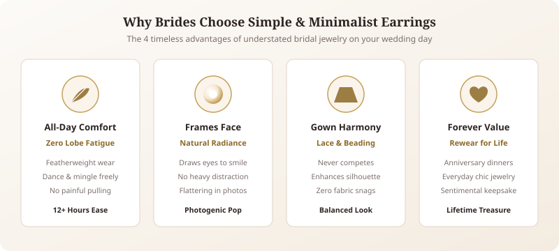
When you look back at your wedding photos in twenty or thirty years, you want to see a version of yourself that feels timeless, authentic, and utterly romantic. Big trend pieces can easily date a wedding portrait, whereas classic, clean designs never lose their charm.
- Effortless Comfort: Wedding days are long. Between the ceremony, photos, first dance, and mingling with guests, heavy earrings can pull on your earlobes and leave you uncomfortable before the reception even starts. Light, simple earrings let you laugh, dance, and hug loved ones freely.
- Focus on Your Features: A pair of elegant bridal earrings should frame your face, not overpower it. Dainty designs draw gentle attention to your eyes, cheekbones, and smile.
- Dress Harmony: If your wedding gown features elaborate lace, hand-beading, or intricate embroidery, minimalist earrings balance the look without competing for visual attention.
- Rewear Value: Unlike oversized statement pieces that sit in a jewelry box after the big day, simple earrings become sentimental treasures you can wear on date nights, anniversaries, or casual outings.
Key Bridal Takeaway
- Understated earrings keep the viewer's focus on your radiant expression rather than heavy hardware.
- Zero earlobe fatigue ensures total comfort across 12+ hours of wedding celebrations.
Types of Simple Bridal Earrings
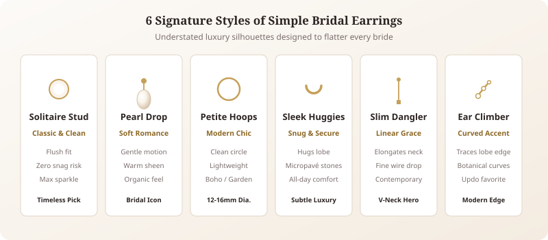
Simplicity comes in many beautiful shapes. When exploring minimalist bridal earrings, you will find several versatile styles that offer just the right touch of sparkle and romance.
Classic Studs
Stud earrings are the epitome of understated sophistication. Stud earrings for bride collections typically feature solitaire round brilliant stones, subtle floral motifs, or bezel-set gemstones. They sit flush against the earlobe, making them a worry-free choice that never catches on delicate veils or loose hairs.
Pearl Drops
Few accessories say "bridal" quite like pearls. Pearl wedding earrings with a short, delicate drop capture movement and catch the light beautifully. Modern brides often choose baroque or teardrop freshwater pearls paired with fine metal accents for an organic, romantic feel.
Sleek Hoops and Huggies
For a contemporary and chic bridal aesthetic, consider miniature huggies or slim, small hoops. Huggies sit snug around the lobe and can be plain polished metal or micro-paved with shimmering stones for a quiet glimmer every time you turn your head.
Minimalist Danglers
If you love a little gentle sway, a threader earring or a slim, fine-line bar drop adds modern elegance. These linear silhouettes elongate your neck while keeping the overall design airy and refined.
Ear Climbers
For fashion-forward brides who want something fresh yet subtle, dainty botanical or curved stone ear climbers trace the natural curve of the ear, delivering an artistic edge while remaining tastefully understated.
Best Earrings for Each Neckline
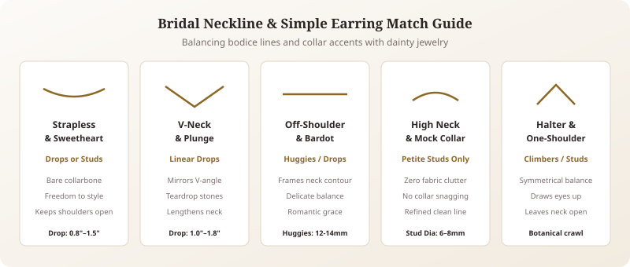
Your gown's neckline plays a major role in framing your upper body. Coordinating your earrings with your neckline creates a balanced, harmonious look from head to toe. Understanding bridal earrings for different necklines ensures you highlight both your dress details and facial symmetry.
- Strapless & Sweetheart: With bare shoulders and an open décolletage, you have total styling flexibility. A delicate pearl drop or a slender dangler adds gentle vertical length, while sparkling studs keep the focus squarely on your gown’s bodice and your glowing collarbones.
- V-Neck: A V-neck draws the eye downward. Mirror this flattering angle with teardrop shapes, subtle linear drops, or small marquise studs that echo the clean lines of the dress.
- Off-Shoulder: Off-the-shoulder gowns highlight your neck and shoulder line beautifully. Pair them with petite drops or medium huggies to maintain an open, romantic aesthetic without cluttering the neckline.
- High Neck & Halter: High-collared, illusion-lace, or halter-style gowns have plenty of fabric near the face. Avoid long drops that tangle with the collar. Instead, choose glowing button pearls or solitaire diamond studs to keep your neckline clean and clutter-free. Explore our curated [bridal necklace ideas] to see when to skip a necklace entirely with high necklines.
Choosing by Face Shape
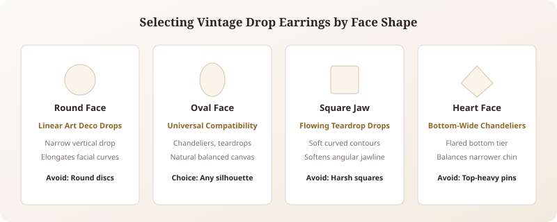
Finding earrings that flatter your facial contour helps highlight your best angles and softens strong lines.
- Round Face: Delicate teardrops, vertical threaders, or slim bar earrings help elongate the face and bring a soft, lengthening balance.
- Oval Face: Lucky you! Oval face shapes can effortlessly carry almost every style. Classic studs, small hoop huggies, or curved climbers all look naturally balanced.
- Heart-Shaped Face: If your chin is narrower than your forehead, choose earrings that are slightly wider at the bottom, such as teardrop pearls or bell-shaped drops, to create lovely visual symmetry.
- Square or Angular Face: Soften a defined jawline with curved silhouettes, such as round studs, smooth pearl drops, or small circular hoops that introduce gentle, fluid lines.
Metal and Stone Choices
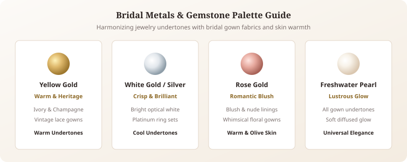
Selecting the right materials ensures your earrings harmonize with your dress tone, engagement ring, and skin undertone.
The Metals
Yellow Gold: Rich, warm, and traditional. Gold brings an inviting warmth that complements champagne, ivory, and vintage-toned wedding dresses.
White Gold and Sterling Silver: Crisp, bright, and modern. Cool silver tones look stunning against pure white gowns and cool-toned bridal fabrics.
Rose Gold: Romantic and soft. Rose gold offers a gentle pink blush that flatters warmer skin tones and pairs gorgeously with blush underlays and floral lace gowns.
The Stones
Freshwater & Cultured Pearls: Luminous and timeless, pearls have a gentle glow rather than a bright flash, making them ideal for daytime and outdoor celebrations.
Diamonds & Cubic Zirconia: If you want light-catching fire in a petite package, clear faceted stones offer brilliant sparkle without feeling loud or overwhelming. Look for bezel or prong settings that let maximum light through. Check out our comprehensive [wedding accessories checklist] to align your gemstones across all your day-of pieces.
Matching Earrings with Hairstyle
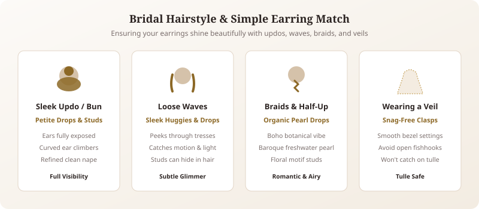
How you wear your hair directly affects how visible your earrings will be throughout the day.
Sleek & Textured Updos
When your hair is pinned up, your ears and neck are fully on display. Sleek buns, chignons, and French twists pair wonderfully with petite drops, cluster studs, or dainty ear crawlers. Because your hair is swept away, even tiny details will catch everyone's eye.
Soft, Loose Waves
Wearing your hair down in romantic Hollywood waves or beachy curls adds texture around your face. While studs can sometimes get lost in loose tresses, tiny drop earrings or small huggies provide just enough movement to peek through your hair when you move.
Romantic Braids & Half-Up Styles
Boho braids and half-up twists offer a whimsical, relaxed vibe. Pair these hairstyles with organic, nature-inspired dainty bridal jewelry, like floral-motif studs or baroque pearl drops, for an effortless fairytale finish.
Wearing a Veil
If you are wearing a long cathedral veil or a fingertip veil, be mindful of earrings with exposed prongs or long, open hooks that could snag on delicate tulle. Smooth bezel-set studs and closed latch-back drops are the safest, snag-free choices.
Matching Earrings with Necklace and Other Jewelry
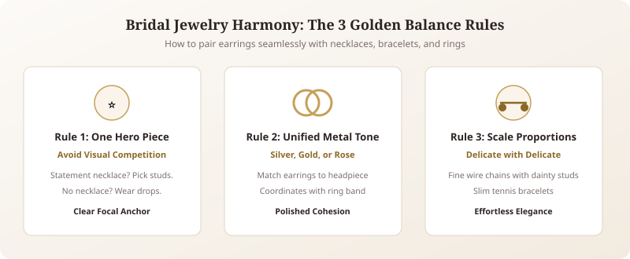
The golden rule of bridal styling is balance. You never want your accessories to shout over each other; rather, they should sing in quiet harmony.
- Let One Piece Lead: If you have chosen an heirloom statement necklace, keep your earrings minimal—think classic diamond or pearl studs. Conversely, if you skip the necklace altogether, you can opt for slightly more detailed minimalist danglers to frame your face.
- Match Your Metals: While mixing metals is trendy in daily fashion, keeping your metals consistent—matching your earrings to your headpiece, bracelet, and dress hardware—creates a polished, cohesive bridal look.
- Keep Proportions Similar: If your earrings feature ultra-delicate, fine-wire craftsmanship, choose a necklace with a similarly dainty chain. Browse our favorite [bridal styling guides] for more tips on balancing your complete bridal ensemble.
Budget-Friendly vs Luxury Options
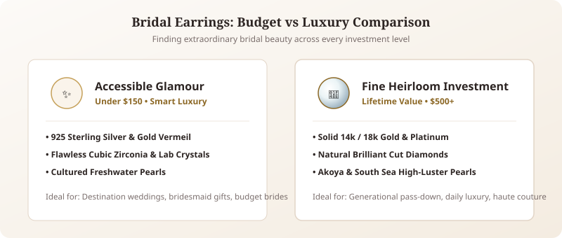
One of the best things about choosing simpler designs is that beauty exists at every price point. You do not need to spend a fortune to look like royalty.
| Tier | Materials & Stones | Ideal For | Key Advantages |
|---|---|---|---|
| Budget-Friendly | Sterling Silver (925), Gold Vermeil, Cubic Zirconia | Modern budget-savvy brides, destination weddings | Accessible pricing, brilliant visual fire, replaceable |
| Mid-Range | Freshwater Cultured Pearls, Lab-Grown Diamonds, 10k/14k Gold | Intimate & traditional weddings, sentimental keepsakes | True longevity, hypoallergenic, genuine organic stones |
| Luxury Heirloom | Solid 18k Gold, Platinum, Natural Diamonds, Akoya Pearls | Haute couture ceremonies, generational heirloom collectors | Never tarnishes, mirror-like luster, timeless investment value |
Budget-Friendly Picks
- Sterling Silver & Gold Vermeil: High-quality sterling silver plated in thick yellow or rose gold gives you the appearance and feel of precious metal at a fraction of the cost.
- Cubic Zirconia & Lab-Grown Accents: High-grade cubic zirconia and created crystals offer stunning clarity and brilliance that look nearly identical to diamonds in photographs.
- Cultured Freshwater Pearls: Real freshwater pearls are remarkably affordable while offering authentic luster and unique, organic shapes.
Luxury Investment Pieces
- Solid 14k or 18k Gold: Solid gold will never tarnish, fade, or irritate sensitive skin. It serves as a lifelong keepsake you can wear daily after the wedding and pass down to future generations.
- Natural Diamonds: A pair of genuine diamond solitaire studs is the quintessential luxury investment that retains sentimental and real value forever.
- Akoya or South Sea Pearls: Renowned for their mirror-like luster and near-perfect symmetry, these fine pearls bring an unmatched regal sheen to high-end bridal couture.
Styling Tips and Common Mistakes to Avoid
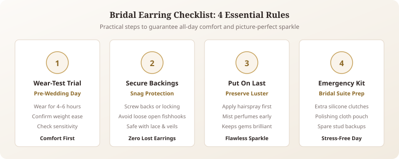
To ensure your wedding morning runs smoothly and you look flawless from morning prep to your midnight send-off, keep these practical styling pointers in mind:
- Test Them Before the Big Day: Wear your chosen earrings for a full afternoon a few weeks before the wedding. This confirms they feel comfortable, are not too heavy, and do not cause any skin sensitivity or redness.
- Beware of Veils and Lace: Choose secure backings like screw-backs or tight butterfly clutches. Avoid open hook designs that could easily slide out when taking off your jacket, hug guests, or remove your veil.
- Don't Forget the Backup Pair: Pack a tiny emergency kit with extra earring backs and a spare pair of simple studs in your bridal suite just in case one gets misplaced during hair and makeup.
- Avoid Last-Minute Changes: Stick to the jewelry vision you planned during your dress fittings. Switching accessories on the wedding morning often leads to second-guessing and unnecessary stress.
- Put Earrings on Last: Hairspray, setting powders, and perfume can coat gems and dull their natural sparkle. Always put your earrings on after your beauty team has finished your hair and makeup.
Frequently Asked Questions
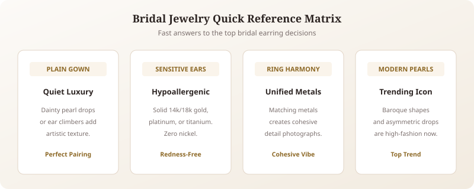
Can I wear simple earrings if my wedding dress is very plain?
Yes, absolutely. A minimalist gown paired with understated jewelry creates an ultra-modern, chic "quiet luxury" look. If you want a tiny hint of extra interest, consider a pair of delicate pearl drops or modern ear climbers that add texture without overwhelming the sleek lines of your dress.
What are the best wedding earrings for sensitive ears?
If your ears are prone to itching or redness, choose hypoallergenic metals such as solid 14k or 18k yellow gold, platinum, or medical-grade titanium. Avoid mystery alloy metals or low-grade nickel plating, especially on a warm, emotionally charged wedding day.
Should my earrings match my engagement ring metal?
While it is not mandatory, matching your earring metal to your engagement ring and wedding band creates a cohesive, harmonious appearance in detail shots and ring photos. If your ring is platinum or white gold, silver-toned earrings will tie the full look together seamlessly.
Are pearl earrings suitable for modern brides?
Pearls are more popular now than ever. Modern bridal jewelry incorporates baroque pearls, raw shapes, and asymmetric designs set in sleek metals, giving this ancient gemstone an effortlessly fresh, high-fashion aesthetic.
Conclusion
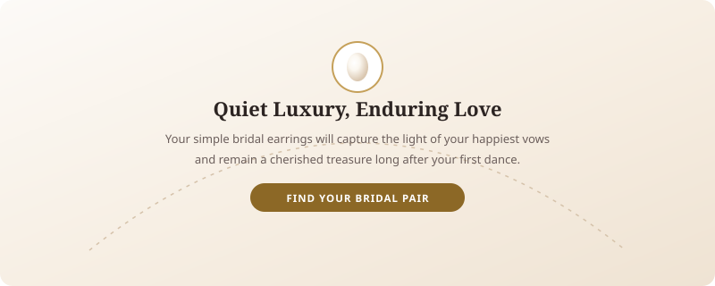
Your wedding day is a celebration of love, commitment, and your unique personal story. While trends come and go, simple bridal earrings remain an enduring symbol of elegance, poise, and graceful charm. By choosing a pair that reflects your natural style and complements your dress and hairstyle, you ensure that you feel confident, radiant, and comfortable from your first step down the aisle to the final dance of the night. Take your time exploring different shapes and materials, trust your intuition, and select the piece that makes you feel like the most beautiful version of yourself.
Explore More Bridal Earring Collections
Ready to explore further styles? Discover our dedicated companion guides: